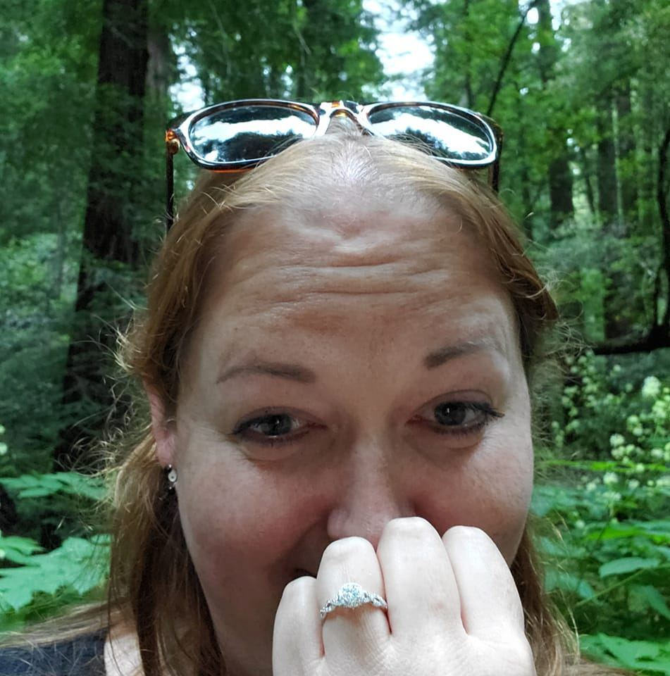
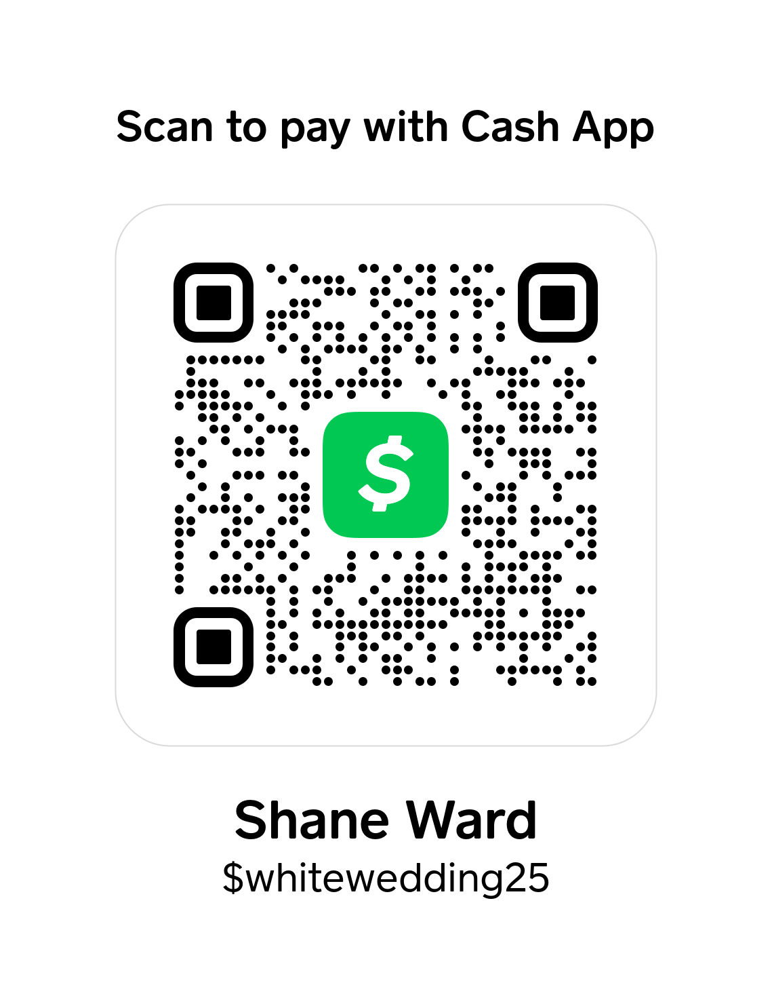

Kara Rachelle White
&
Shane Ryan Ward
October 25, 2025
&
October 25, 2025
On the last day of a trip to San Francisco in 2022, Kara and Ryan went north to visit the Muir Woods Monument. Ryan brought the ring, not knowing whether or not he would pop the question, nor did he have any plan that day to propose, but he was watching for the right opportunity, the right moment should it present itself. As they walked the trails winding between the trees, they took in the nature and beauty around them. The air was filled with the scents of redwood, water, and earth. Toward the end of the trail, adjacent to their path, Ryan saw a bridge crossing a small stream cutting through the woods. It seemed to him picturesque and a focal point of this part of the trail. "That's the spot." he thought to himself. He took note of it as they continued on the trail. It would give him time to think of how to pop the question, what to say. Though he had thought for months about this moment, he didn't know what he would say. He didn't want to sound corny or cliche, but how would he go about this? It was starting to get late and they turned to head back to the car. Their path didn't take them across the bridge, but as they were going to pass it, Ryan stopped. "Hey, come with me over here for a minute" he said while nodding toward the bridge. Kara seemed a little confused as to why, but she did as he asked.
The light was beginning to fade and the forest obscured much of the light, but the bridge was illuminated by the break in the trees above it. They stepped to the middle of the small bridge and he turned and put his arms around her. Still not sure of what all he should say, he rambled about how bright their future together seemed. New jobs, he finished school the previous year, they had never been in a better place. He told her he loved her and this seemed right. He then discreetly took a coin out of his pocket and dropped it on the ground, making an audible ring. He said, "I'll get that", then kneeled down to get the coin while simultaneously taking the ring out of his pocket. He looked up at her with a smile and offered up the ring. "Will you be my bride?" he asked. She gave an enthusiastic ”YES!”.
We have a small registry, but we appreciate donations to our honeymoon in lieu of gifts.
